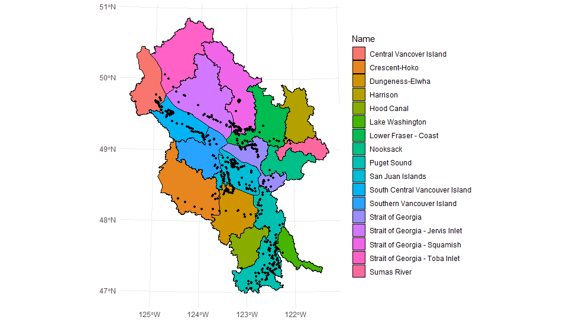
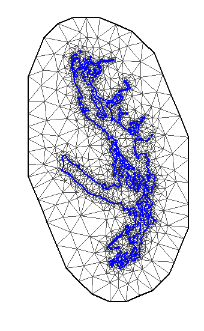

source("Scripts/00_Setup.R")
#Manually Specify the start and end year of the analysis. These years should match those selected for the data cleaning scripts.
Y1 = 2008
Y2 = 2023
#Load your saved species data
sp.data<-read.csv("Data/sp.data.csv")
#Load your saved events data which is needed for zero-filling
events<-read.csv("Data/events.csv")
#Create a spatial points layers for graphing results
loc<-events %>% select(SurveyAreaIdentifier, DecimalLatitude, DecimalLongitude) %>% distinct()
xy<-st_as_sf(loc, coords = c("DecimalLongitude", "DecimalLatitude"))
st_crs(xy)<-"+proj=longlat +datum=NAD83"
#Load the Salish Sea Water Polygon for graphing results
map<- st_read("Data/Spatial/Salish_Sea_Water_Polygon.shp")
#ensure the coordinate reference systems are the same
mapCRS<-st_crs(map) #get the CRS of the poly data
xy<-st_transform(xy, mapCRS) #transform 3 Analysis and Visualization
Run setup if starting a new environment. Load previously saved data and format for analysis.
3.1 Set Analysis Parameters
Here the user has several customization options.
3.1.1 Model Type
You can choose the continuous space “SPDE” or discrete space “iCAR” method.
#model<-"iCAR"
model<-"SPDE"If doing an SPDE model, you may define your area as “SalishSea”, “BCCWS”, or “PSSS”. Only sites with more than 10 years of data will be retained in the analysis.
if(model == "SPDE"){
area <- "SALISHSEA" #one word to be compatible with the code.
#area <- "BCCWS"
#area <- "PSSS"
}If doing an iCAR model, upload the desired spatial polygon for the analysis. We use “Watersheds in the Salish Sea Bioregion” layer from the Salish Sea Atlas Data as an example.
A polygon should have counts in all years to ensure that sampling is complete and consistent. Those that have incomplete time series are removed.
if(model == "iCAR"){
#Load polygon shapefile
poly <- st_read("Data/Spatial/Salish_Sea_Watersheds.shp") %>% st_make_valid()
#Check that your polygon is valid
st_is_valid(poly)
#List available fields for user selection
print(names(poly))
#Prompt user to select polygon ID and area fields
polygon_id_field <- "Name" #Enter the field name for polygon ID (e.g., 'WatershedID')
area_field <- "" #Enter the field name for area (or leave blank if none or you desire equal weights)
#Rename fields to 'Name' and 'Area'. If polygon area is missing, this will be created and assigned to 1. Analytically, this means the "Study Area" trend will be equally weighted across all polygons.
poly <- poly %>%
rename(Name = !!polygon_id_field) %>%
mutate(Area = if (area_field != "") .data[[area_field]] else 1)
#Spatially filter the polygon to those that have points
poly <- st_transform(poly, st_crs(mapCRS))
Grid <- poly %>% st_filter(xy, .predicate = st_intersects)
loc.xy <- st_join(Grid, xy)
#Spatially filter the point to those that are only contained within the polygon
points <- st_filter(xy, Grid, .predicate = st_within)
#Visualize
plot <- ggplot() +
geom_sf(data = Grid, aes(fill = Name), color = "black") +
geom_sf(data = points, color = "black", size = 1) +
theme_minimal()
print(plot)
ggsave(
filename = file.path(plot.dir, "iCAR_Spatial_Plot.jpeg"),
plot = plot,
width = 8,
height = 6,
dpi = 300
)
#Create the grid table that links the polygon ID to the SurveyAreaIdentifier
grid <- loc.xy %>%
st_drop_geometry() %>%
select(SurveyAreaIdentifier, Name, Area) %>%
distinct() %>%
mutate(
alpha_i = as.integer(factor(Name))
)
#Joint to your events layer and drop survey points outside the polygon
events <- left_join(events, grid, by = "SurveyAreaIdentifier") %>% drop_na(Name)
}
3.1.2 Species or Guild Specific Analysis
For a species-specific analysis, select the species you wish to analyse.
#To view your options of species
species<-unique(sp.data$CommonName)
#view(species)
#Create a list of species using all available species in the dataset.
species.list<-tolower("All") #R is case sensitive
#Or you can manually select species. Ensure case and spelling is correct.
#species.list <- c("American Wigeon", "Common Loon", "Large Gull") For a guild-specific analysis, change guild to “Yes” and specify the type as either “migration”, “diet”, or “family”. This will override the species list above.
You do not need to run this code chunk if doing a species-specific analysis. Default guild is set to “No” in the setup script.
guild <- "yes"
#To view your options of guilds
migration<-unique(sp.data$Migration)
#view(migration)
diet<-unique(sp.data$Diet)
#view(diet)
family<-unique(sp.data$family_name)
#view(family)
#select on of the options for the analysis
type <-"migration"3.1.3 Minimum Data Requirement
Select the minimum data requirements for the analysis. The ones selected here were done following the inspection of the International dataset. However, finer scale assessment may need to assess their suitability.
#The minimum data required across sites with at least one detection:
min.abundance <- 10 #Overall abundance per year > 10
min.years <- (Y2-Y1)/2 #Detected in > one-half of the survey years
nsites <- 10 #Detected at > 10 survey sites3.1.4 Model Specifications
Select the distributional family, and set random and spatial priors, or retain the defaults. These priors were selected based on model assessments for the full study area.
#Here we select 'nbinomal' but this may need to adjust if there is residual overdispersion.
fam<-'nbinomial'
#fam<-'poisson'
#Priors for the random effects
hyper.iid <- list(prec = list(prior = "pc.prec", param = c(1, 0.01)))
#SPDE spatial priors
prior.range = c(20, 0.5) # 50% probability range >20 km
prior.sigma = c(1, 0.1) # 10% probability stdev >1 
3.2 Analysis
Create output tables to the Output folder using a custom file name.
The files that this code creates is a file for Annual Indices for each sampling site, end-point Trends, and a file with the Dispersion statistic.
You are ready to start your analysis! The analysis will write results to the files on the folder and also create some plots for model checking.
#Give your analytically output file a unique name (e.g., BCCWS_Species, SalishSea_Migration, Watershed_Species),
name<-"Salish_Species"
#This is the template used for the State of Canada's Birds and is required for upload into NatureCounts
#Create output tables, which will include your custom name and the `model` you specified.
output_tables(name, model)
#Now we can initiate the analysis based on the `model` you previously specified.
run_analysis(model)Note that the Dispersion Statistic file in the Output folder should be reviewed after the analysis. If the statistic is > 10 you should inspect the FitPlots in the Plot directory. In this case we will want to rerun using a different distributional assumption on the counts. This can be done by manually changing the fam to Poission and selecting these species to be rerun.
3.3 Results
The analysis calculates trends using both the end point method and a slope through the calculated annual indices of abundance. When mapping the results, the user needs to select which trend outputs they would like to view as either “Endpoint” or “Slope”. Given these models are
trend <- "Slope"
#trend <- "Endpoint"
#Graph your outputs
graph_results(model, name, trend)